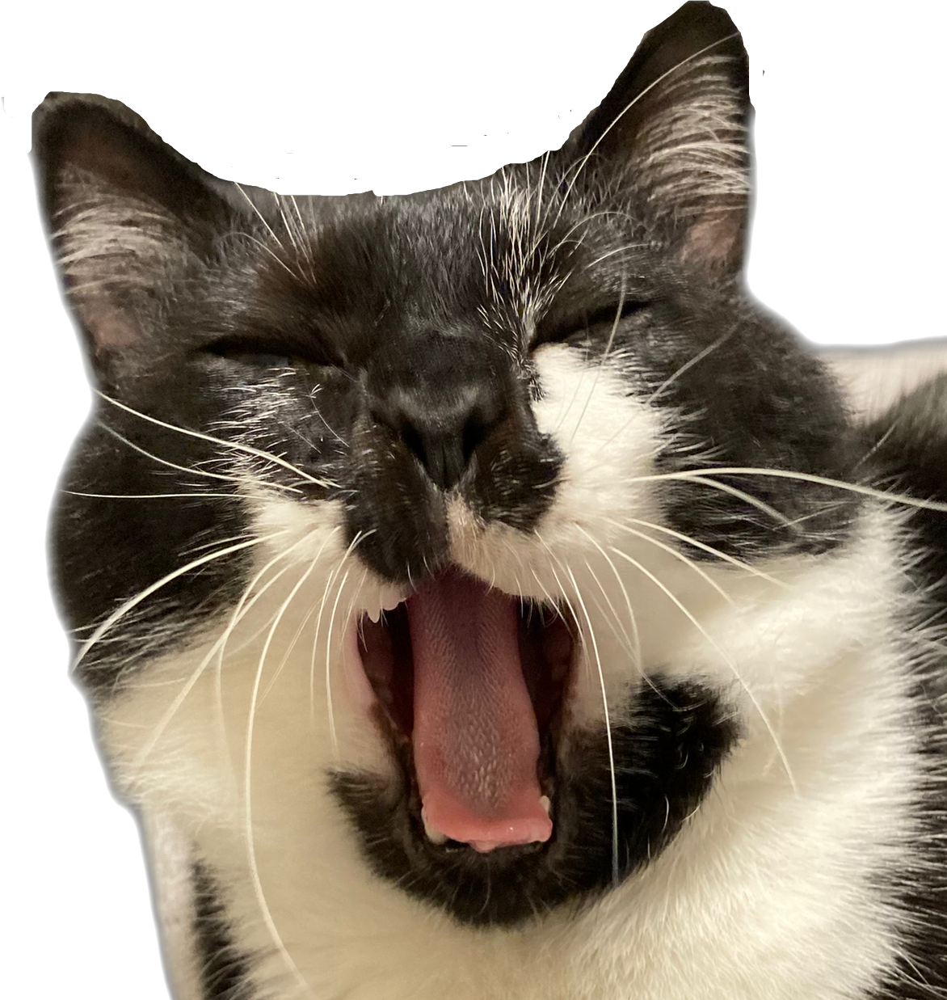

北向綾乃
の
自己紹介

青森県の八戸市から今年の８月に引っ越してきました。
まだ北海道には慣れていませんがこれから寒くなる前に観光地や評判のお店など回ってみたいと思っています。
神社や仏閣も好きなので最近はあまりできていなかった御朱印巡りも復活させて、バイクでいろんなところに行きながらに北海道探索をしていく予定です。
休日は猫と遊んだり動画を見たりと家でゆっくり過ごしています。
最近あったショックなことは、なぜかハイテンションで走り回っていた猫にすれ違いざまに「シャーッ!!」っと威嚇されたことです。
うちにこの子が来てから初めて言われてしまいました。
今まで経験した職業は、東京で病院の受付事務を経験したのち、八戸に戻り精肉と鮮魚の専門店で６年、その後雑貨屋で３年勤めました。
専門店での経験から魚と肉の加工は得意です。
IT業界は在宅ワークやリモートワークを導入している企業が多いと思います。
今までは夫の転勤の際には仕事をやめて再就職しなければならなかったため、 働くことに成長していく楽しさをあまり求められない環境でした。
技術を身に着け、ゆくゆくは在宅ワークで同じ会社で長く働けるようにし、 経験を積み上げて成長していく楽しさを取り戻したいと思っています。
そして人を楽しませたり役に立つものの製作に携わり、社会に貢献できるような人間になりたいです。
そして老後は猫とまったりと穏やかに過ごすのが理想です。
2021年8月に普通二輪自動二輪車免許を取得。
物心ついたころからなぜかバイク大好きでした。
愛車のレブルは車高低めで女性や身長の低い人でも足つきが良く エンジン音も比較的静かで街乗りにもおすすめです。
シンプルなデザインでカスタムしなくても十分かっこよくて気に入っています。
冬にはスノーボートをすることが楽しみです。 青森にいる頃には「奥中山高原スキー場」という岩手県のスキー場がお気に入りでした。
スノボ終わりに併設するジェラートハウスで寒さと戦いながらジェラートを食べてから家路につくのが定番でした。
始めて５年ほどですが、夫の鬼教官ぶりが功を奏し、何とか人並みに滑ることができるようになりました。


チャームポイントはきっちり履いた白の手袋と靴下です。
元々アパートの駐車場でうろうろしていた野良猫さんでした。
初めてあったときはケガもたくさんしていて猫風にもかかっていたのか目ヤニと鼻水もすごかったです。
ガリガリにやせてしまっていてこれじゃ冬を越せないと思い保護することを決意しました。
体も小さかったこともあり子猫だと思っていたのですが実際は4~5歳位だろうといわれびっくりしました。
うちの子になってからは１週間立たないうちに人の膝でくつろぐようになり、２週間程たちケージから解放されるとすぐに一緒にベッドで寝るようになりました。
今ではとても元気になり、食欲旺盛でちょっとメタボなうちのアイドルになっています。
６歳になった今でも遊ぶのも大好きな活発なおじさんにゃんこです。
食いしん坊なので腹時計がすごく正確で朝ごはん、お昼のおやつ、夜ごはんと規則正しくお知らせをしてくれます。
夫に対しては甘えん坊になります。
夫が釣ってくる魚を楽しみにしていた、調理しているとお行儀よくお座りして待っています。
最近のブームはイカのけりぐるみを初めて見たこたつの中に持っていくことです。


エキゾチックなのにお鼻が潰れていないのがチャームポイントです。
長毛ほど長くなく、短毛ほど短くない絶妙な長さをしています。
母が猫を飼いたいとお迎えする子を探している時に家族全員の意見が一致したのがこの子でした。
3月4日は母の誕生日と同じで母は運命を感じたそうです。
家に連れ帰った初日から人の膝の上でへそ天していました。我が家は全員メロメロです。
今ではちょっとクールなにゃんこに育ちましたが、母のことが大好きで夜寝るときは絶対に母のベッドで眠ります。
私が実家に帰ると玄関でお出迎えをしてくれ、その後すぐに猫じゃらし置き場に誘導されます。
遊び担当は私と決めているようです。
大きく見えますが体重はソラより軽くスリムです。
月に1度のシャンプーでは、ドライヤーが大嫌いでいつも怒りんぼうになります。
終わった後に季節のテーマに合わせて写真撮影をしてくれます。
ずっと変わらず好きなことはハーネスをつけてお外にお散歩に行くことです。
誰かが玄関に行くと「僕もいく！！」と毎回張り切っています。